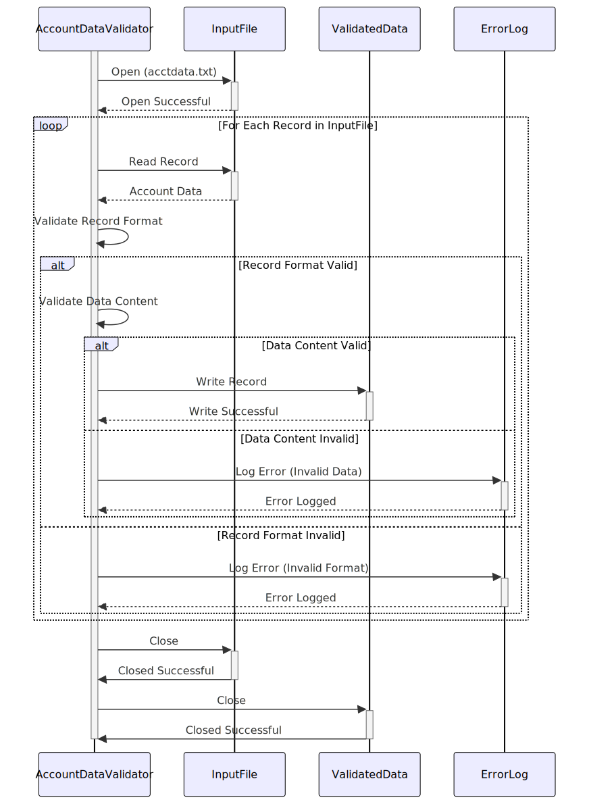

Gerado em: 1 de outubro de 2024
Título do Documento: Validador e Processador de Arquivo de Dados de Conta
Descrição Resumida:
Este programa valida registros de clientes de um arquivo de entrada (acctdata.txt) com base em regras de negócios predefinidas, com foco principal no formato e conteúdo dos dados. Os registros que passam na validação são gravados em um arquivo de saída, enquanto os registros inválidos são registrados para posterior investigação e correção.
Histórias do Usuário:
Como analista de dados, desejo garantir que apenas dados de contas válidos e formatados corretamente sejam usados para análise e geração de relatórios. Este programa me ajudará identificando e separando automaticamente os registros inválidos, economizando meu tempo e reduzindo erros em minhas análises.
Épico Relacionado:
10 - Gerenciamento de Arquivos de Dados
Requisitos Funcionais:
- Ler Arquivo de Entrada: O programa deve ser capaz de ler registros de clientes de um arquivo de entrada chamado
acctdata.txt.
- Validar Formato do Registro: Cada registro deve estar em conformidade com um formato predefinido (por exemplo, colunas de largura fixa, campos delimitados). O programa deve identificar e sinalizar quaisquer desvios deste formato.
- Número da Conta: 10 dígitos, somente numéricos.
- Tipo de Conta: 1 caractere, alfanumérico.
- Limite de Crédito: 6 dígitos, somente numéricos.
- Saldo Atual: 6 dígitos, somente numéricos.
- Data de Abertura da Conta: Formato AAAA-MM-DD.
- Data da Última Transação: Formato AAAA-MM-DD.
- Data do Último Extrato: Formato AAAA-MM-DD.
- Status da Conta: 1 caractere.
- Validar Conteúdo de Dados: O programa deve verificar a validade de campos de dados individuais com base em regras de negócios. Por exemplo:
- Limite de Crédito: Não pode ser negativo.
- Saldo Atual: Não pode exceder o Limite de Crédito.
- Status da Conta: Deve ser um dos códigos de status permitidos (por exemplo, A - Ativo, C - Fechado, S - Suspenso).
- Registrar Registros Inválidos: Para cada registro que falhar na validação, o programa deve registrar o seguinte:
- Número do Registro: O número da linha do arquivo de entrada.
- Código de Erro: Um código que identifica a regra de validação específica que falhou.
- Descrição do Erro: Uma breve descrição do erro.
- Gravar Registros Válidos: Os registros que passarem em todas as verificações de validação devem ser gravados em um arquivo de saída.
- Relatório de Erros: O programa deve gerar um relatório resumido listando todos os registros inválidos e seus erros correspondentes.
Requisitos Não Funcionais:
- Desempenho: O programa deve ser capaz de processar arquivos de entrada grandes (por exemplo, milhões de registros) em um período de tempo razoável.
- Confiabilidade: O programa deve ser confiável e produzir resultados consistentes. O tratamento de erros deve ser robusto para evitar a terminação inesperada do programa.
- Manutenibilidade: O código deve ser bem estruturado, documentado e fácil de entender para futuras manutenções e aprimoramentos.
- Registro em Log: O programa deve ter um mecanismo para registrar eventos, erros e informações importantes para fins de depuração e auditoria.
Critérios de Aceite:
- Validação e Processamento Bem-Sucedidos: O programa lê o arquivo
acctdata.txt, valida cada registro de acordo com as regras definidas e grava os registros válidos em um arquivo de saída.
- Tratamento de Erros Preciso: Registros inválidos são identificados e registrados com códigos de erro e descrições específicas.
- Geração de Relatório de Erros: Um relatório de erros abrangente é gerado, listando todos os registros inválidos e seus erros associados.
- Desempenho e Eficiência: O programa demonstra desempenho aceitável em termos de tempo de processamento para diferentes tamanhos de arquivo.
Melhorias de Código:
- Design Modular: Implemente as regras de validação como funções ou métodos separados para melhorar a organização e a legibilidade do código.
- Arquivo de Configuração: Use um arquivo de configuração para armazenar regras de validação e parâmetros, permitindo modificações mais fáceis sem alterar o código-fonte.
- Estruturas de Dados: Utilize estruturas de dados apropriadas (por exemplo, matrizes, estruturas) para armazenar e gerenciar dados com eficiência.
- Tratamento de Exceções: Implemente o tratamento de exceções para gerenciar erros normalmente e evitar falhas no programa.
- Documentação de Código: Adicione comentários claros e concisos para explicar a lógica e a funcionalidade do código.
Melhorias de Segurança:
- Validação de Entrada: Implemente validação de entrada rígida para evitar o processamento de dados maliciosos ou malformados que podem comprometer o sistema.
- Manipulação Segura de Arquivos: Garanta que o programa manipule arquivos com segurança, incluindo permissões de arquivo adequadas e exclusão segura de dados confidenciais.
- Registro em Log e Auditoria: Registre todas as operações de arquivo, resultados de validação e condições de erro para auditoria e análise de segurança.
Diagrama Conceitual:

–Made by “Smart Engineering” (by Compass.UOL)–